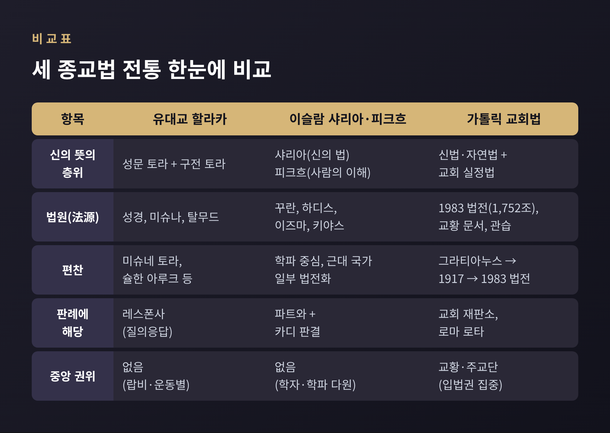
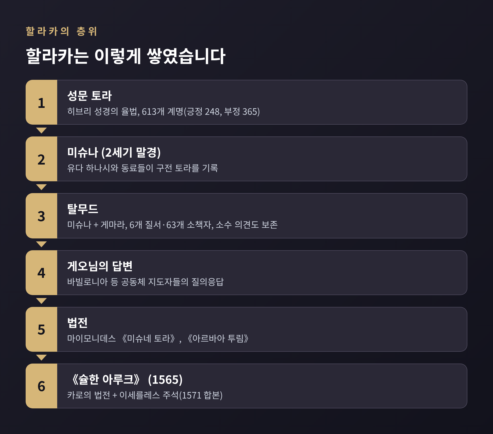
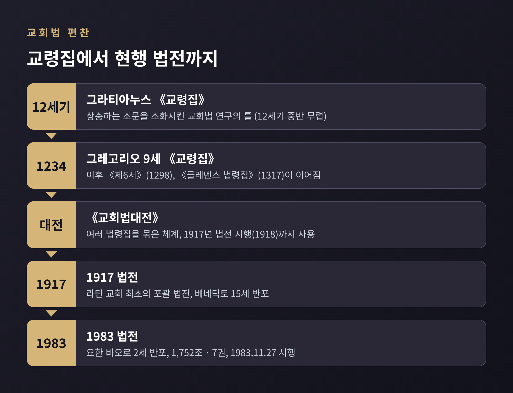
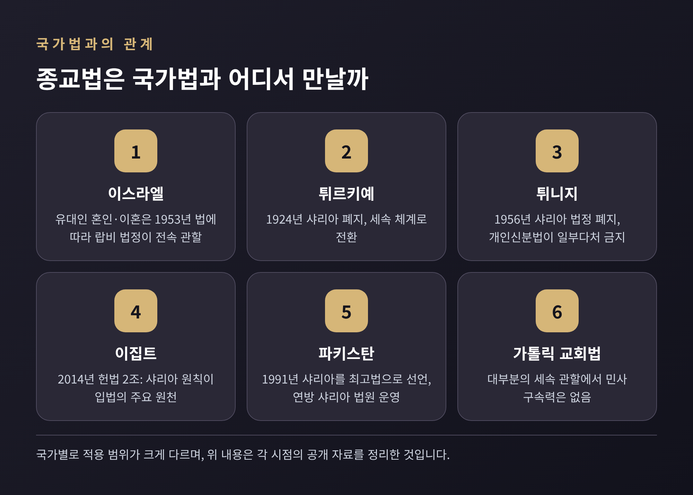

[종교] 유대교·이슬람·가톨릭의 법 전통을 교양으로 읽다
오늘은 유대교의 할라카, 이슬람의 샤리아와 피크흐, 가톨릭의 교회법을 나란히 놓고 비교해 보려 합니다. 세 전통은 모두 신의 뜻을 사람이 지킬 수 있는 규범으로 옮겨 왔습니다. 그 과정에서 법전, 학파, 재판소, 질의응답이라는 장치가 어떻게 쓰였는지 살펴봅니다.
이 글은 어느 신앙이 옳은지를 다루지 않습니다. 비교종교학의 관점에서 제도가 만들어진 방식만 정리합니다.
세 전통에는 닮은 점이 하나 있습니다. 불변이라고 여겨지는 신의 뜻과, 그것을 해석하고 적용하는 인간의 작업을 구분한다는 점입니다.
차이는 누가 법을 만드느냐에서 갈립니다. 가톨릭은 교황이 보편 입법권을 가진 단일 입법자 구조입니다. 할라카와 피크흐에는 그런 중앙 입법자가 없습니다. 랍비와 법학자 공동체가 해석을 쌓아 법을 키워 왔습니다.

할라카는 히브리어로 "걷다"라는 어근에서 왔고, "걸어야 할 길"이라는 뜻으로 풀이됩니다. 흔히 유대법이라 옮기지만 법률 조문만 뜻하지는 않습니다. 일상의 행동 전반을 안내하는 길에 가깝습니다.
성경의 법은 매우 일반적인 문장으로 쓰여 있습니다. 구체적 상황에 적용하려면 해석이 필요했고, 그 해석 체계가 할라카가 되었습니다. 탈무드는 토라에 613개의 계명이 있다고 헤아립니다. 긍정 계명이 248개, 부정 계명이 365개입니다. 성전과 이스라엘 땅에 매인 계명이 많아서, 오늘날 실제로 지킬 수 있는 것은 약 369개로 알려져 있습니다.
층위는 이렇게 쌓였습니다.

할라카의 판례에 가장 가까운 것은 레스폰사(셰엘로트 우테슈보트)입니다. 법학자가 구체적 질문에 서면으로 답한 글로, 약 1,700년에 걸쳐 쌓였습니다.
질문은 대개 실제 상황에서 나옵니다. 법전이 다루지 못한 사안이 많아서 레스폰사는 법전의 빈틈을 메웁니다. 후대의 판단자들이 이를 참조하고, 때로는 나중에 법전에 편입되기도 합니다. 근세에는 답변이 더 길고 정교해졌습니다. 정통파의 모셰 파인스타인, 오바디아 요세프가 근현대의 대표적 권위자로 꼽힙니다.
다만 이것은 법원의 판결과는 성격이 다릅니다. 판단은 질문한 사람과 공동체를 구속하고, 설득력이 있을 때 점차 널리 받아들여집니다.
현대의 운동별 입장은 갈립니다.
어느 쪽이 맞는지는 이 글이 판단할 영역이 아닙니다. 같은 전통 안에서도 권위의 범위를 두고 입장이 다르다는 사실만 기억해 두시면 됩니다.
이슬람에서는 두 단어를 구분해서 씁니다. 샤리아는 꾸란과 순나(하디스)에 드러난 신의 법이며, 불변이라고 여겨집니다. 피크흐는 이를 사람이 이해하고 적용한 법학입니다. 오류가 있을 수 있고 바뀔 수 있다고 봅니다.
피크흐의 법원(法源)은 중요도 순으로 네 가지입니다.
알샤피이(767–820)가 《알리살라》에서 이 네 뿌리를 체계화한 것으로 소개됩니다. 12신 시아파는 키야스 대신 이성('aql)을 법원으로 인정합니다. 행위는 의무, 권장, 허용, 비권장, 금지의 다섯 범주로 나뉩니다.
중앙 법전 대신 학파(마드합)가 발달했다는 점이 큰 특징입니다. 수니파에는 하나피, 말리키, 샤피이, 한발리 4대 학파가 있고, 각각 북·서아프리카, 남·중앙아시아, 동아프리카·동남아시아, 아라비아 북·중부에서 우세합니다. 학파들은 서로의 타당성을 인정합니다. 시아파에는 자파리 학파 등이 있습니다.
판례의 자리에는 파트와와 카디의 판결이 있습니다. 파트와는 법학자가 내리는 구속력 없는 법률 의견이고, 카디는 증거를 평가해 판결하는 재판관입니다. 법이 불분명하면 카디는 무프티에게 자문합니다.
독립적 법 추론인 이즈티하드를 둘러싼 논쟁도 있습니다. 브리태니커는 16세기에 이르러 수니 법학자들 사이에서 "정말 새로운 사안"을 제외하면 이즈티하드가 닫혔다는 견해가 널리 퍼졌다고 설명합니다. 반면 와엘 할락은 2001년 논문에서 이즈티하드가 실제로 멈춘 적이 없고, 법학자들이 다른 이름으로 계속했다고 반박했습니다. 시아파는 이즈티하드를 지속되는 과정으로 보고, 평신도는 살아 있는 무즈타히드를 따릅니다.
학계에서도 결론이 갈리는 주제라서, 한쪽으로 단정하지 않는 편이 정직합니다.
가톨릭 교회법은 세 전통 중 가장 법전다운 모습을 띱니다. 서구에서 가장 오래 이어진 법체계로 소개됩니다.
12세기 중반 무렵, 볼로냐의 그라티아누스가 《교령집》을 썼습니다. 정식 이름은 《불일치 교회법의 조화》입니다. 서로 충돌하는 조문을 판사처럼 저울질해 조화시키는 방식이었습니다. 교회가 공식 법전으로 승인한 책은 아니었지만, 이후 교회법 연구의 틀이 되어 그는 "교회법의 아버지"로 불립니다. 정확한 완성 연대는 소스마다 다릅니다. 1139년 이후로 추정하는 설명도 있고 1150년경으로 적은 곳도 있어서, 여기서는 12세기 중반 무렵이라고만 적습니다.
이후 교황들의 법령집이 이어졌습니다. 1234년 그레고리오 9세의 《교령집》, 1298년 《제6서》, 1317년 《클레멘스 법령집》입니다. 이를 묶어 《교회법대전》이라 부르며, 이 체계가 1917년 법전이 시행(1918년)될 때까지 쓰였습니다.
예전엔 수백 년에 걸쳐 쌓인 법령집을 학자들이 읽어 내야 했습니다. 지금은 하나의 법전이 있습니다. 1983년 1월 25일 요한 바오로 2세가 반포하고 같은 해 11월 27일 시행한 현행 법전은 총 1,752조, 7권입니다.
반포문은 법전이 "신앙·은총·카리스마의 대체물이 결코 아니다"라고 밝힙니다. 개인과 사회 생활의 질서를 보장하는 도구라는 설명입니다. 마지막 1752조는 영혼의 구원이 교회에서 언제나 최고의 법이라는 취지의 문장으로 끝납니다.

교회법에도 재판소가 있습니다. 판사, 정의 촉구관, 혼인 유대 보호관, 변호인 같은 직책이 있고, 로마 로타가 최종 상소심 역할을 합니다. 엄격한 선례구속 원칙은 아니지만 재판과 법학이 운용을 이룹니다.
대표적 사례가 혼인 무효 재판입니다. 2015년 프란치스코 교황은 자의교서 《Mitis Iudex Dominus Iesus》(‘자비로운 재판관이신 주님’이라는 뜻의 라틴어 제목)를 발표했고, 12월 8일 시행됐습니다. 핵심은 이렇습니다.
교황청은 혼인이 깨질 수 없다는 교리가 바뀐 것이 아니라 무효 여부를 확인하는 절차를 빠르고 쉽게 한 것이라고 밝힙니다. 개정의 명분은 "영혼의 구원이라는 최고의 법"이었습니다.
평가는 엇갈립니다. 한 쪽은 가난한 신자를 중심에 둔 개혁이라고 환영하며 "혁명적"이라고까지 평합니다. 다른 쪽, 이를테면 교회법학자 쿠르트 마르텐스는 단축 절차가 공정한 재판을 보장하지 못할 수 있다고 우려했습니다. 이탈리아 법학자들 사이에서는 교회와 국가, EU 사법 체계 간 충돌을 걱정하는 목소리도 보고됩니다. 코코팔메리오 추기경은 유효한 혼인을 무효로 만드는 것이 아니라 무효임을 선언하는 것이라는 입장을 밝혔습니다.
종교법이 국가법과 맞닿는 지점은 대개 혼인, 이혼, 상속 같은 가족법입니다. 사실 위주로 짚어 보겠습니다.
이스라엘. 오스만 시대 밀레트 제도(종교 공동체별 관할)를 이어받은 구조입니다. 1953년 법에 따라 유대인의 혼인과 이혼은 랍비 법정이 전속 관할하고 유대 종교법에 따릅니다. 무슬림, 드루즈, 10개 기독교 교파도 각자의 종교 법정이 맡습니다. 이스라엘 안에서는 종교 간 혼인이나 동성 혼인을 올릴 수 없는 반면, 해외에서 한 민사 혼인은 국가가 인정합니다. 유대인 이혼은 2018년 11,145건이었습니다. 한편 인권 단체는 이혼이 남편의 의사에 좌우된다고 비판하는데, 이는 단체 한 곳의 주장이므로 그대로 받아들이기보다 하나의 시각으로 보시기 바랍니다.
무슬림 다수국. 많은 나라가 전통법을 유럽 모델로 대체했습니다. 헌법에 샤리아를 언급하는 나라는 많아도, 실제 규칙은 대체로 가족법과 일부 국가의 형법에 남아 있습니다.
1876년 오스만이 하나피 법학을 《마잘라》로 법전화한 것도 근대 국가가 학파의 법을 성문법으로 바꾼 사례입니다. 현재 샤리아에 대한 입장은 순수한 시행을 주장하는 쪽, 인권·민주주의와 양립할 수 있다고 보는 쪽, 샤리아의 목적(마까시드)을 넓혀 해석하는 개혁가들로 나뉩니다.
가톨릭. 교회법은 대부분의 세속 관할에서 민사적 구속력이 없습니다. 신자에게 교회 안에서 효력을 갖는 법입니다.

세 전통을 나란히 두면 신의 뜻이 곧바로 법이 되지 않는다는 점이 보입니다. 그 사이에는 늘 해석하는 사람들과 그 해석을 쌓는 제도가 있었습니다. 레스폰사와 파트와, 재판소의 판결이 그 장치입니다.
한계도 분명합니다. 이 글은 세 전통을 압축했고, 같은 전통 안의 학파나 운동에 따라 실제 규범은 크게 다릅니다. 국가별 현실도 계속 바뀝니다.
결국 남는 것은 하나입니다.
"법은 신의 뜻을 대신하지 않고, 신의 뜻을 살아가려는 사람들의 해석을 담는 그릇이다."
세 전통이 이 그릇을 빚은 방식이 달랐다는 점이, 오히려 서로를 비교해 볼 이유가 아닐까 싶습니다.